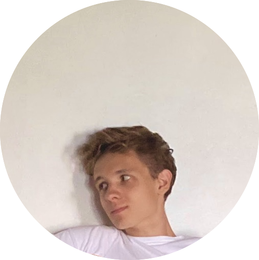

Botond Branyicskai-Nagy

I am a recent Machine Learning MSc graduate at UCL, working on publishing the findings from my thesis with Prof. Mirco Musolesi in the Machine Intelligence Lab. Previously I was an undergraduate in Theoretical Physics at Imperial College, where I completed my final year project with Dave Clements in the Astrophysics Group. I also spent a summer as a research intern under the supervision of Mark van der Wilk working on Causal Discovery and GPLVMs. I grew up in Budapest, Hungary.